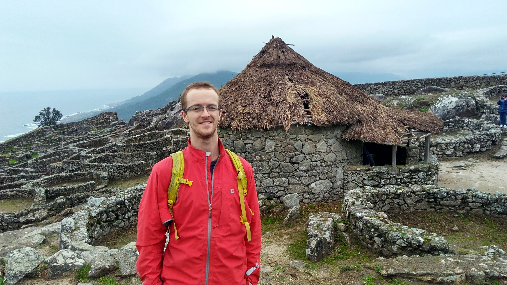

Rayos X, Física, Programación, Datos, IA
Manchester, Reino Unido
acoat02 [arroba] gmail [punto] com
Habilidades informáticas
Matlab
Python
IA
Github
LabVIEW
C#
Idiomas
Inglés
Español
Italiano
Francés
Si cree que mis habilidades y experiencia podrían ser de valor, no dude en ponerse en contacto conmigo.
Aquí está el enlace a mi tesina de máster: Tesina de máster
Aquí está el enlace a la presentación de defensa de mi tesina de máster: Presentación de defensa de la tesina de máster
Todos los métodos de ciencia de datos y aprendizaje automático de este proyecto se completaron en Python (pandas, numpy, scikit-learn, matplotlib).
Tema de la tesis doctoral: Puesta en marcha de una fuente de rayos X de plasma láser sin vacío para su aplicación en imagen de rayos X con contraste de fase basada en propagación
Tema de la tesina de máster: Ciencia de datos en física médica y radioterapia personalizada
Tesina de máster: Tesina de máster
Presentación de defensa de la tesina de máster: Presentación de defensa de la tesina de máster
Tema del proyecto de honores: Modelización matemática de neuronas cerebrales en Python
Notas: